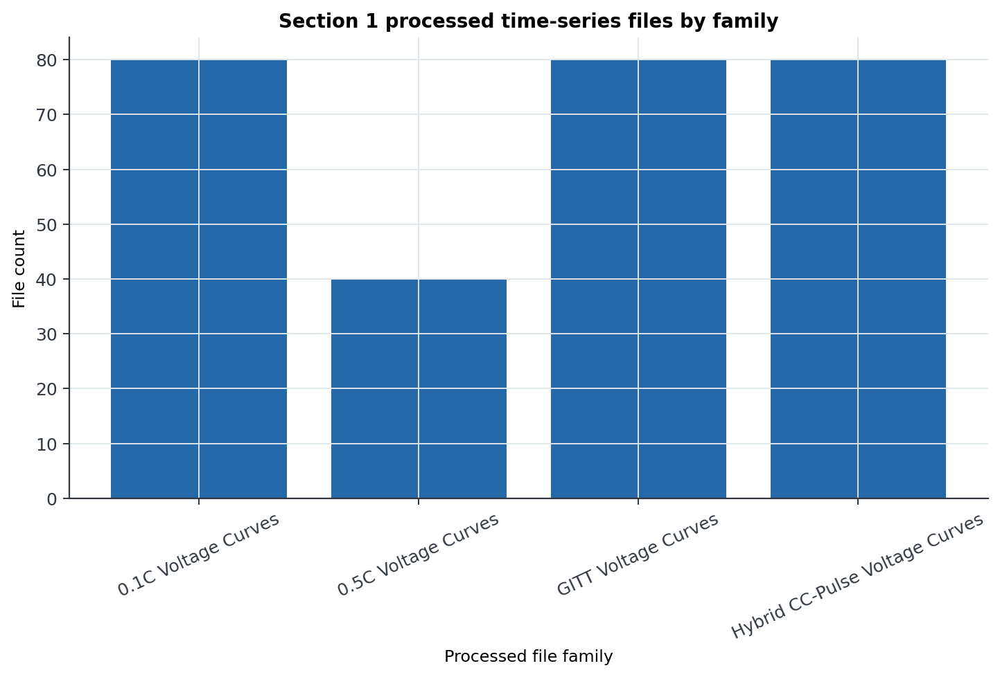
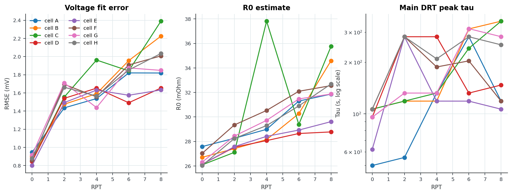
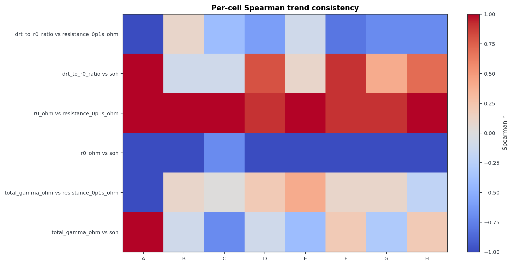
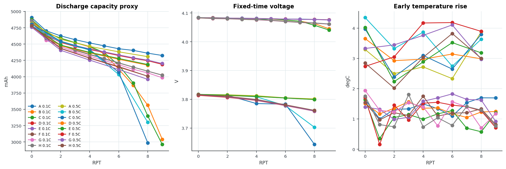
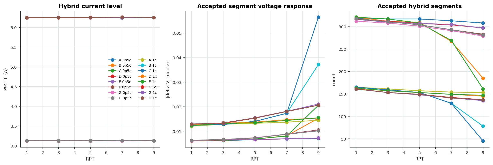
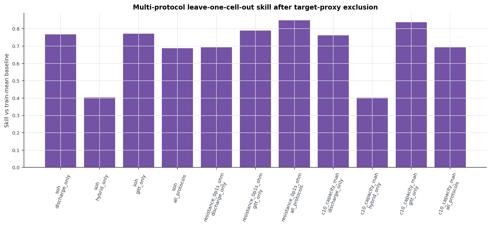

LG M50T 21700 Expt 4 drive-cycle aging Time-Series DRT Pipeline
Blunt Verdict
The analysis chain runs on processed LG M50T 21700 Expt 4 drive-cycle aging GITT, discharge-curve, and hybrid-pulse data.
GITT is the DRT-like feature track. Discharge and hybrid traces are health-feature tracks, not DRT proof.
It still does not provide EIS-derived DRT validation. Do not sell it as validated physics.
Read First
Section Reports
first-slice protocol inventory
LG M50T 21700 Expt 4 drive-cycle aging Time-Series DRT Pipeline, first-slice protocol inventory
{kind=link}

file and protocol screen
LG M50T 21700 Expt 4 drive-cycle aging Time-Series DRT Pipeline, file and protocol screen

HPPC window finder
LG M50T 21700 Expt 4 drive-cycle aging Time-Series DRT Pipeline, HPPC window finder

HPPC candidate fit
LG M50T 21700 Expt 4 drive-cycle aging Time-Series DRT Pipeline, HPPC candidate fit

EIS DRT baseline
LG M50T 21700 Expt 4 drive-cycle aging Time-Series DRT Pipeline, EIS DRT baseline
{kind=link}

time-domain versus EIS bridge comparison

lambda sensitivity check
LG M50T 21700 Expt 4 drive-cycle aging Time-Series DRT Pipeline, lambda sensitivity check

combined EIS and time-domain DRT prototype

time-series 2D DRT surface
LG M50T 21700 Expt 4 drive-cycle aging Time-Series DRT Pipeline, time-series 2D DRT surface

EIS 2D DRT surface
LG M50T 21700 Expt 4 drive-cycle aging Time-Series DRT Pipeline, EIS 2D DRT surface
{kind=link}

time-series versus EIS 2D comparison
{kind=link}

multi-cell 2D batch check
LG M50T 21700 Expt 4 drive-cycle aging Time-Series DRT Pipeline, multi-cell 2D batch check
{kind=link}

multi-temperature 2D batch check
LG M50T 21700 Expt 4 drive-cycle aging Time-Series DRT Pipeline, multi-temperature 2D batch check
{kind=link}

combined DRT mirror check
LG M50T 21700 Expt 4 drive-cycle aging Time-Series DRT Pipeline, combined DRT mirror check

Run Summary
Show implementation details
{
"section_1_data_audit": {
"converted_root": "[local path redacted]
"raw_root": "[local path redacted]
"conversion_manifest_rows": 305,
"converted_status_counts": {
"converted_existing": 305
},
"converted_extension_counts": {
".mpt": 304,
".csv": 1
},
"processed_timeseries_files": 280,
"processed_family_counts": {
"0.1C Voltage Curves": 80,
"GITT Voltage Curves": 80,
"Hybrid CC-Pulse Voltage Curves": 80,
"0.5C Voltage Curves": 40
},
"performance_summary_rows": 80,
"raw_performance_check_file_count": 666
},
"section_2_file_screen": {
"files_screened": 5,
"files_completed": 5,
"files_errored": 0
},
"section_3_gitt_window_finder": {
"input_path": "[local path redacted]
"relative_path": "[local path redacted]
"columns": {
"time_s": "Time (s)",
"current_a": "Current (mA)",
"voltage_v": "Voltage (V)",
"temperature_c": "Temperature (degC)"
},
"rows_loaded_after_cleaning": 176270,
"time_start_s": 0.0,
"time_stop_s": 116442.71814585019,
"duration_s": 116442.71814585019,
"median_dt_s": 1.0000001042790245,
"rest_current_threshold_a": 0.05,
"step_current_threshold_a": 0.12496340499999999,
"current_min_a": -2.5004492,
"current_max_a": 0.0,
"voltage_min_v": 2.4999781,
"voltage_max_v": 4.1849165,
"candidate_count": 25,
"accepted_count": 25
},
"section_4_gitt_candidate_fit": {
"input_path": "[local path redacted]
"relative_path": "[local path redacted]
"column_mapping": {
"time_s": "Time (s)",
"current_a": "Current (mA)",
"voltage_v": "Voltage (V)",
"temperature_c": "Temperature (degC)"
},
"candidate": {
"candidate_id": 13,
"accepted": true,
"start_idx": 85218,
"end_idx": 88101,
"start_time_s": 47400.016944171,
"end_time_s": 47688.196974228194,
"pulse_duration_s": 288.1800300571995,
"pre_rest_s": 3660.084381773202,
"post_rest_s": 3659.8223817484095,
"median_current_a": -2.4984810000000004,
"current_step_a": -2.4992681,
"max_abs_step_a": 2.4992681,
"voltage_span_v": 0.0882582000000002,
"temperature_drift_c": 2.3799680000000016,
"median_dt_s": 1.0000001042790243,
"tau_min_s": 2.000000208558049,
"tau_max_s": 1316.0008039352033,
"excitation_score": 77.24067149793954
},
"include_pre_s": 120.0,
"include_post_s": 900.0,
"lambda_value": 0.001,
"baseline_mode": "charge",
"fit_rows": 4444,
"trend_info": {
"offset_v": 3.642289425091754,
"drift_v_per_as": 5.3574392947077525e-05
},
"r0_ohm": 0.027539871739480894,
"rmse_v": 0.0002815649580452951,
"rmse_mv": 0.2815649580452951,
"tau_min_s": 0.2000000211846782,
"tau_max_s": 435.44804541954124,
"n_tau": 72,
"top_recovered_peaks": [
{
"tau_s": 44.84027669205974,
"gamma_ohm": 0.007962807989804309
},
{
"tau_s": 227.43628686742406,
"gamma_ohm": 0.004507490977217634
},
{
"tau_s": 253.43846018505087,
"gamma_ohm": 0.004421721893289679
},
{
"tau_s": 40.2397727065717,
"gamma_ohm": 0.003975629172133104
},
{
"tau_s": 4.143691908066363,
"gamma_ohm": 0.0011254117430638318
},
{
"tau_s": 0.6579160101623993,
"gamma_ohm": 0.0009518749025284338
}
],
"broad_band_summary": [
{
"band": "fast_band_4_to_16_s",
"tau_start_s": 4.0,
"tau_stop_s": 16.0,
"gamma_sum_ohm": 0.00200597151971256
},
{
"band": "mid_band_25_to_90_s",
"tau_start_s": 25.0,
"tau_stop_s": 90.0,
"gamma_sum_ohm": 0.011938437161937413
},
{
"band": "slow_band_90_to_450_s",
"tau_start_s": 90.0,
"tau_stop_s": 450.0,
"gamma_sum_ohm": 0.008929212870507314
}
]
},
"section_5_gitt_batch": {
"files_requested": 40,
"files_completed": 40,
"files_errored": 0,
"pulse_fits_completed": 1000,
"median_fitted_pulses_per_file": 25.0,
"median_rmse_mv": 1.611414006136459,
"median_r0_ohm": 0.02885371903552069,
"soc_bucket_counts": {
"mid_soc": 360,
"high_soc": 320,
"low_soc": 320
}
},
"section_6_model_sensitivity": {
"settings_tested": 12,
"rmse_min_mv": 0.24348731932838874,
"rmse_max_mv": 6.052494669656816,
"main_peak_tau_min_s": 44.84027669205974,
"main_peak_tau_max_s": 435.44804541954124
},
"section_7_raw_conversion_check": {
"input_path": "[local path redacted]
"relative_path": "[local converted data not published]",
"columns": {
"time_s": "time/s",
"current_a": "I/mA",
"voltage_v": "Ecell/V",
"temperature_c": "Temperature/\u00b0C"
},
"rows_loaded_after_cleaning": 78183,
"time_start_s": 0.0,
"time_stop_s": 104736.1930842283,
"duration_s": 104736.1930842283,
"median_dt_s": 1.0000000475047273,
"rest_current_threshold_a": 0.05,
"step_current_threshold_a": 0.100038545,
"current_min_a": -0.50021991,
"current_max_a": 1.5074998,
"voltage_min_v": 2.4999781,
"voltage_max_v": 4.2002296,
"candidate_count": 3,
"accepted_count": 3
},
"section_8_health_label_join": {
"rows": 40,
"cells": [
"A",
"B",
"C",
"D",
"E",
"F",
"G",
"H"
],
"rpts": [
0,
2,
4,
6,
8
],
"temperature_groups_c": [
10.0,
25.0,
40.0
],
"correlations_computed": 189,
"strongest_abs_spearman": [
{
"feature": "low_soc_gamma_sum_ohm_slow_band_90_to_450_s_mean",
"label": "c2_capacity_mah",
"n": 40,
"pearson_r": -0.9939845469914397,
"spearman_r": -0.9977485928705443
},
{
"feature": "low_soc_gamma_sum_ohm_slow_band_90_to_450_s_mean",
"label": "c10_capacity_mah",
"n": 40,
"pearson_r": -0.9917072266212411,
"spearman_r": -0.9975609756097563
},
{
"feature": "low_soc_peak_1_gamma_ohm_mean",
"label": "c2_capacity_mah",
"n": 40,
"pearson_r": -0.993806615846405,
"spearman_r": -0.9941838649155723
},
{
"feature": "low_soc_peak_1_gamma_ohm_mean",
"label": "c10_capacity_mah",
"n": 40,
"pearson_r": -0.9887922061402656,
"spearman_r": -0.9939962476547843
},
{
"feature": "mid_soc_r0_ohm_mean",
"label": "resistance_0p1s_ohm",
"n": 40,
"pearson_r": 0.9890292605726817,
"spearman_r": 0.9934333958724205
},
{
"feature": "r0_ohm",
"label": "resistance_0p1s_ohm",
"n": 40,
"pearson_r": 0.9895282829200616,
"spearman_r": 0.9923076923076924
},
{
"feature": "high_soc_r0_ohm_mean",
"label": "resistance_0p1s_ohm",
"n": 40,
"pearson_r": 0.9771653067739814,
"spearman_r": 0.9881801125703567
},
{
"feature": "low_soc_gamma_sum_ohm_slow_band_90_to_450_s_mean",
"label": "soh",
"n": 40,
"pearson_r": -0.9894402158333597,
"spearman_r": -0.9866342019741482
}
]
},
"section_9_held_out_cell_validation": {
"input_rows": 40,
"prediction_rows": 990,
"metric_rows": 27,
"incremental_value_rows": 9,
"drt_increment_positive_rows": 0,
"best_skill_rows": [
{
"n": 40,
"mae": 0.00013195422225803795,
"rmse": 0.00018963423217473982,
"baseline_mae": 0.001851219321297414,
"skill_vs_baseline_mae": 0.9287203732480716,
"validation_scope": "global",
"target": "resistance_0p1s_ohm",
"feature_set": "r0_plus_voltage"
},
{
"n": 30,
"mae": 0.00017441293366119912,
"rmse": 0.0002196642973555387,
"baseline_mae": 0.0020566307296713124,
"skill_vs_baseline_mae": 0.9151948227044757,
"validation_scope": "within_temperature",
"target": "resistance_0p1s_ohm",
"feature_set": "r0_plus_voltage"
},
{
"n": 30,
"mae": 0.00026105453381317334,
"rmse": 0.00032209601136354537,
"baseline_mae": 0.0020566307296713124,
"skill_vs_baseline_mae": 0.8730668904014214,
"validation_scope": "within_temperature",
"target": "resistance_0p1s_ohm",
"feature_set": "r0_only"
},
{
"n": 40,
"mae": 0.00025257520304031644,
"rmse": 0.0005493622701951096,
"baseline_mae": 0.001851219321297414,
"skill_vs_baseline_mae": 0.8635627879773311,
"validation_scope": "global",
"target": "resistance_0p1s_ohm",
"feature_set": "drt_plus_r0"
},
{
"n": 40,
"mae": 0.00026626820776162686,
"rmse": 0.0009928159993802292,
"baseline_mae": 0.001851219321297414,
"skill_vs_baseline_mae": 0.8561660389461501,
"validation_scope": "global",
"target": "resistance_0p1s_ohm",
"feature_set": "drt_plus_r0_voltage"
},
{
"n": 40,
"mae": 0.00028396588969427345,
"rmse": 0.00045026542429882105,
"baseline_mae": 0.001851219321297414,
"skill_vs_baseline_mae": 0.8466060253221331,
"validation_scope": "global",
"target": "resistance_0p1s_ohm",
"feature_set": "r0_only"
},
{
"n": 30,
"mae": 0.0003748156907858942,
"rmse": 0.0005417501299519405,
"baseline_mae": 0.0020566307296713124,
"skill_vs_baseline_mae": 0.8177525574336835,
"validation_scope": "within_temperature",
"target": "resistance_0p1s_ohm",
"feature_set": "voltage_only"
},
{
"n": 30,
"mae": 50.94424105689212,
"rmse": 73.0526393016271,
"baseline_mae": 277.3071962062775,
"skill_vs_baseline_mae": 0.8162895094182959,
"validation_scope": "within_temperature",
"target": "c10_capacity_mah",
"feature_set": "voltage_only"
}
]
},
"section_10_trend_consistency": {
"input_rows": 40,
"correlation_rows": 160,
"expected_direction_checks": 32,
"expected_direction_pass": 26,
"expected_direction_pass_ratio": 0.8125
},
"section_11_discharge_curve_features": {
"files_requested": 120,
"files_completed": 120,
"files_errored": 0,
"family_counts": {
"0.1C Voltage Curves": 80,
"0.5C Voltage Curves": 40
}
},
"section_12_hybrid_pulse_features": {
"files_requested": 80,
"files_completed": 80,
"files_errored": 0,
"rate_counts": {
"0p5c": 40,
"1c": 40
},
"hybrid_segments_total": 17983,
"accepted_hybrid_segments_total": 17801,
"median_accepted_segments_per_file": 165.0
},
"section_13_multi_protocol_validation": {
"feature_table_rows": 80,
"prediction_rows": 600,
"metric_rows": 11,
"feature_counts": {
"discharge_only": 26,
"hybrid_only": 22,
"gitt_only": 32,
"all_protocols": 80
},
"leakage_audit_rows": 480,
"excluded_target_proxy_features": 64,
"best_skill_rows": [
{
"n": 40,
"mae": 0.0002813058501867872,
"rmse": 0.00047447470205600845,
"baseline_mae": 0.0018512193212974156,
"skill_vs_baseline_mae": 0.8480429374572237,
"target": "resistance_0p1s_ohm",
"feature_set": "all_protocols"
},
{
"n": 40,
"mae": 39.415793511831296,
"rmse": 158.19442843169125,
"baseline_mae": 242.88733175250113,
"skill_vs_baseline_mae": 0.8377198463689517,
"target": "c10_capacity_mah",
"feature_set": "gitt_only"
},
{
"n": 40,
"mae": 0.00039022949531565684,
"rmse": 0.0014982964523222308,
"baseline_mae": 0.0018512193212974156,
"skill_vs_baseline_mae": 0.7892040717022298,
"target": "resistance_0p1s_ohm",
"feature_set": "gitt_only"
},
{
"n": 40,
"mae": 0.01127230939046409,
"rmse": 0.03716499875047362,
"baseline_mae": 0.04925979949220335,
"skill_vs_baseline_mae": 0.7711661536046603,
"target": "soh",
"feature_set": "gitt_only"
},
{
"n": 80,
"mae": 0.011513244340301435,
"rmse": 0.01655132650855938,
"baseline_mae": 0.049466686789073344,
"skill_vs_baseline_mae": 0.7672525675836331,
"target": "soh",
"feature_set": "discharge_only"
},
{
"n": 80,
"mae": 58.130461283182285,
"rmse": 96.04555468355015,
"baseline_mae": 244.71141392915052,
"skill_vs_baseline_mae": 0.7624530039288957,
"target": "c10_capacity_mah",
"feature_set": "discharge_only"
},
{
"n": 80,
"mae": 75.05034059850452,
"rmse": 116.3850826686472,
"baseline_mae": 244.71141392915052,
"skill_vs_baseline_mae": 0.693310829301026,
"target": "c10_capacity_mah",
"feature_set": "all_protocols"
},
{
"n": 40,
"mae": 0.0005692054380187863,
"rmse": 0.0012059090487387379,
"baseline_mae": 0.0018512193212974156,
"skill_vs_baseline_mae": 0.6925240399825439,
"target": "resistance_0p1s_ohm",
"feature_set": "discharge_only"
},
{
"n": 80,
"mae": 0.015438816525433195,
"rmse": 0.024813708082955042,
"baseline_mae": 0.049466686789073344,
"skill_vs_baseline_mae": 0.6878946715945515,
"target": "soh",
"feature_set": "all_protocols"
},
{
"n": 40,
"mae": 0.029921141066363798,
"rmse": 0.04184384519823314,
"baseline_mae": 0.05018015767251797,
"skill_vs_baseline_mae": 0.4037256466662992,
"target": "soh",
"feature_set": "hybrid_only"
}
]
},
"section_14_locked_feature_comparison": {
"feature_table_rows": 80,
"prediction_rows": 720,
"metric_rows": 18,
"incremental_value_rows": 18,
"drt_bands_positive_skill_rows": 6,
"drt_over_r0_positive_rows": 4,
"drt_over_r0_total_rows": 6,
"best_skill_rows": [
{
"n": 40,
"mae": 0.0002839685504697517,
"rmse": 0.00045036591920885133,
"baseline_mae": 0.0018512193212974156,
"skill_vs_baseline_mae": 0.8466045880124382,
"validation": "leave_one_cell_out",
"target": "resistance_0p1s_ohm",
"feature_set": "r0_only",
"features_used": 1,
"feature_names": "gitt_r0_ohm"
},
{
"n": 40,
"mae": 0.00033055978105097457,
"rmse": 0.0005948930162177245,
"baseline_mae": 0.0018512193212974156,
"skill_vs_baseline_mae": 0.8214367270003946,
"validation": "leave_one_cell_out",
"target": "resistance_0p1s_ohm",
"feature_set": "r0_plus_drt_bands",
"features_used": 4,
"feature_names": "gitt_r0_ohm|gitt_gamma_sum_ohm_fast_band_4_to_16_s|gitt_gamma_sum_ohm_mid_band_25_to_90_s|gitt_gamma_sum_ohm_slow_band_90_to_450_s"
},
{
"n": 40,
"mae": 0.00038563505692910006,
"rmse": 0.0005876235769416786,
"baseline_mae": 0.0018988440080163315,
"skill_vs_baseline_mae": 0.7969106175646508,
"validation": "leave_one_temperature_out",
"target": "resistance_0p1s_ohm",
"feature_set": "r0_only",
"features_used": 1,
"feature_names": "gitt_r0_ohm"
},
{
"n": 40,
"mae": 0.00040614657301017807,
"rmse": 0.0006808338265591096,
"baseline_mae": 0.0018988440080163315,
"skill_vs_baseline_mae": 0.7861085106014223,
"validation": "leave_one_temperature_out",
"target": "resistance_0p1s_ohm",
"feature_set": "r0_plus_drt_bands",
"features_used": 4,
"feature_names": "gitt_r0_ohm|gitt_gamma_sum_ohm_fast_band_4_to_16_s|gitt_gamma_sum_ohm_mid_band_25_to_90_s|gitt_gamma_sum_ohm_slow_band_90_to_450_s"
},
{
"n": 40,
"mae": 0.02487319707536995,
"rmse": 0.03876009225718888,
"baseline_mae": 0.04925979949220335,
"skill_vs_baseline_mae": 0.49506093545291874,
"validation": "leave_one_cell_out",
"target": "soh",
"feature_set": "r0_plus_drt_bands",
"features_used": 4,
"feature_names": "gitt_r0_ohm|gitt_gamma_sum_ohm_fast_band_4_to_16_s|gitt_gamma_sum_ohm_mid_band_25_to_90_s|gitt_gamma_sum_ohm_slow_band_90_to_450_s"
},
{
"n": 40,
"mae": 124.92557193866446,
"rmse": 205.95768691857106,
"baseline_mae": 242.88733175250113,
"skill_vs_baseline_mae": 0.48566452174639596,
"validation": "leave_one_cell_out",
"target": "c10_capacity_mah",
"feature_set": "r0_plus_drt_bands",
"features_used": 4,
"feature_names": "gitt_r0_ohm|gitt_gamma_sum_ohm_fast_band_4_to_16_s|gitt_gamma_sum_ohm_mid_band_25_to_90_s|gitt_gamma_sum_ohm_slow_band_90_to_450_s"
},
{
"n": 40,
"mae": 140.52594593742006,
"rmse": 275.5482849584753,
"baseline_mae": 242.88733175250113,
"skill_vs_baseline_mae": 0.42143567174341523,
"validation": "leave_one_cell_out",
"target": "c10_capacity_mah",
"feature_set": "drt_bands_only",
"features_used": 3,
"feature_names": "gitt_gamma_sum_ohm_fast_band_4_to_16_s|gitt_gamma_sum_ohm_mid_band_25_to_90_s|gitt_gamma_sum_ohm_slow_band_90_to_450_s"
},
{
"n": 40,
"mae": 0.028544234632932965,
"rmse": 0.055074232905511875,
"baseline_mae": 0.04925979949220335,
"skill_vs_baseline_mae": 0.4205369301705981,
"validation": "leave_one_cell_out",
"target": "soh",
"feature_set": "drt_bands_only",
"features_used": 3,
"feature_names": "gitt_gamma_sum_ohm_fast_band_4_to_16_s|gitt_gamma_sum_ohm_mid_band_25_to_90_s|gitt_gamma_sum_ohm_slow_band_90_to_450_s"
},
{
"n": 40,
"mae": 0.028594471398109257,
"rmse": 0.04967321717423524,
"baseline_mae": 0.04927781693009507,
"skill_vs_baseline_mae": 0.41972933909241483,
"validation": "leave_one_temperature_out",
"target": "soh",
"feature_set": "r0_plus_drt_bands",
"features_used": 4,
"feature_names": "gitt_r0_ohm|gitt_gamma_sum_ohm_fast_band_4_to_16_s|gitt_gamma_sum_ohm_mid_band_25_to_90_s|gitt_gamma_sum_ohm_slow_band_90_to_450_s"
}
],
"locked_feature_sets": {
"r0_only": [
"gitt_r0_ohm"
],
"drt_bands_only": [
"gitt_gamma_sum_ohm_fast_band_4_to_16_s",
"gitt_gamma_sum_ohm_mid_band_25_to_90_s",
"gitt_gamma_sum_ohm_slow_band_90_to_450_s"
],
"r0_plus_drt_bands": [
"gitt_r0_ohm",
"gitt_gamma_sum_ohm_fast_band_4_to_16_s",
"gitt_gamma_sum_ohm_mid_band_25_to_90_s",
"gitt_gamma_sum_ohm_slow_band_90_to_450_s"
]
}
}
}HTML files exported: 36